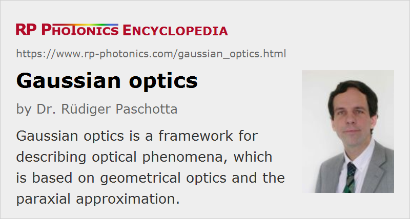

Gaussian Optics
Definition: a framework for describing optical phenomena, which is based on geometrical optics and the paraxial approximation
More general term: optics
German: Gauß-Optik
How to cite the article; suggest additional literature
Author: Dr. Rüdiger Paschotta
Gaussian optics is a framework for describing optical phenomena, which is based on geometrical optics (ray optics) and makes extensive use of the paraxial approximation. It has been developed by Johann Carl Friedrich Gauss (1777 – 1855) and is still widely used for many purposes.
The essential assumptions on which Gaussian optics is based are the following:
- Light can be described with geometrical light rays (geometrical optics); wave effects can be ignored.
- The investigated systems are rotationally symmetric around an optical axis. (A simple generalization can lead to different behavior in two transverse dimensions, for example for treating cylindrical lenses.)
- All relevant light rays have only relatively small angles against the optical axis. Various equations treat only first-order terms, e.g. identifying the sine or the tangent of an angle (in radians) with the angle itself. The paraxial approximation is used throughout.
It is no problem that substantial angles can be involved e.g. in refraction at prisms; at those optical components, the optical axis can also be assumed to be bent. Only angles relative to the optical axis need to be small.
Under the mentioned assumptions, a substantially simplified mathematical description of optical phenomena is possible:
- Any light ray can be described with two coordinates for a certain z position along the optical axis: for example, a transverse coordinate y and an angle u. (Sometimes, one uses reduced coordinates ω = n u and τ = z / n, where some relations are simpler.)
- For a wide range of optical components such as lenses, prisms and mirrors, one can describe the effect on the two coordinates with a 2 × 2 matrix (ABCD matrix), because the relations between inputs and outputs are linear.
- Likewise, any combination of such optical elements (and air spaces between them) can be described with such a matrix, which is obtained by multiplication of the matrices corresponding to the different elements and air spaces.
- One can also describe the optical function of an element or a combination of elements by specifying so-called cardinal points. Those can be calculated from the mentioned matrix, and vice versa. A complete optical system can thus be treated as a kind of black box, which is characterized with only a couple of Gaussian parameters.
One can also apply the related rules in geometrical drawings.
The described framework can be applied to a wide range of optical systems – for example, to telescopes, photo cameras and microscopes. One can calculate parameters like focal lengths, the transverse, linear and longitudinal magnification, identify conjugate planes, focal planes, image planes etc. However, important phenomena like optical aberrations cannot be treated, because those involve geometrical nonlinearities which are neglected in Gaussian optics. Their treatment requires substantially more sophisticated mathematical methods. One can consider Gaussian optics to provide a simplified description, which is relatively easily calculated, and aberrations (as calculated with more sophisticated methods) are deviations from that.
Although Gaussian optics belongs to the methods of geometrical optics, various parameters have a direct correspondence to quantities in wave optics. Therefore, it is possible, for example, to describe the propagation of Gaussian beams (including wave effects like diffraction) based on parameters calculated with Gaussian optics.
Note that the well known Gaussian beams are not appearing in the realm of Gaussian optics; they belong to wave optics.
Questions and Comments from Users
Here you can submit questions and comments. As far as they get accepted by the author, they will appear above this paragraph together with the author’s answer. The author will decide on acceptance based on certain criteria. Essentially, the issue must be of sufficiently broad interest.
Please do not enter personal data here; we would otherwise delete it soon. (See also our privacy declaration.) If you wish to receive personal feedback or consultancy from the author, please contact him e.g. via e-mail.
By submitting the information, you give your consent to the potential publication of your inputs on our website according to our rules. (If you later retract your consent, we will delete those inputs.) As your inputs are first reviewed by the author, they may be published with some delay.
See also: geometrical optics, paraxial approximation, image planes, cardinal points, principal points and principal planes, ABCD matrix
and other articles in the category general optics
|  |
If you like this page, please share the link with your friends and colleagues, e.g. via social media:
These sharing buttons are implemented in a privacy-friendly way!